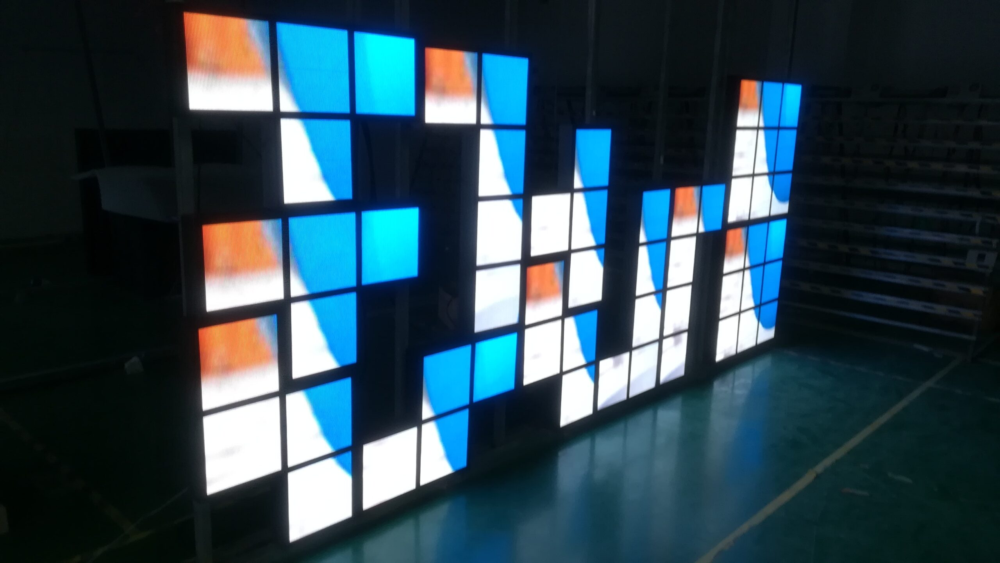

A runway show is judged in minutes and photographed from every angle, which makes the visual backdrop part of the collection itself. LED has become the standard tool for that backdrop because a designer can set a different world for each look without rebuilding a physical set between shows.
The requirements are unusually specific. The screen appears in press photography and broadcast, it sits behind moving models lit by strong stage lighting, and it is often installed and struck inside a single day. This guide covers what that combination demands from the display and the content.
Fashion presentation has moved decisively toward digital backdrops. Where a show once relied on printed panels, projection, or a plain white cyclorama, LED is now the default because it offers high brightness, deep blacks, and total flexibility in a compact package. A designer can open on a stark monochrome set and close on a saturated color field within the same show.
The driver is photography. Runway imagery is distributed within minutes and lives for years, so the backdrop must look correct on camera, not merely acceptable to the audience in the room. That places flicker, refresh rate, and color accuracy at the center of the specification, ahead of raw pixel density in many cases.
A second driver is schedule. Fashion calendars are compressed, venues are shared, and load-in windows are short. Rental LED systems that assemble quickly, align cleanly, and strike without damage are worth far more than a marginally finer pitch, because the show cannot wait for the screen to be built.
The third driver is creative range. Designers increasingly use the runway floor as well as the wall, turning the catwalk itself into a moving image surface. That extends the specification into floor-rated products and adds questions about load capacity and surface protection that a wall-only project never faces.
Front-of-house and back-of-house needs differ as much as wall and floor. The press area, the hair and makeup room, and the check-in desk all benefit from screens that show schedules and looks to a small audience at close range, and these can often be handled by the same rental fleet that builds the main backdrop. Planning the whole show as one display package rather than a set of unrelated rentals usually cuts both cost and crew time.
Finally, color direction is a creative decision with a technical consequence. A designer's color palette must survive the wall's rendering and the stage lighting without shifting, which is why a test of the actual content on the actual screen is worth more than any specification sheet. A short technical rehearsal on the built wall prevents a color surprise on the night.
Data protection and content rights deserve a moment too. Show content, music videos, and brand assets often arrive from several agencies, and the screen operator needs clear rights to display them and a simple way to load them under time pressure. Confirming the content delivery format and the loading process in advance avoids the situation where the wall is ready but the media is not.
Weather and venue are the last variables. Tents, outdoor shows, and temporary structures bring dust, moisture, and unstable power, so the rental kit should be chosen with the venue in mind. Where a show is staged under canvas or in the open, confirm protection for the cabinets and a power plan that keeps the wall stable through the event.
Sequencing deserves the same attention as resolution. Designers often change the backdrop between segments, which means the wall receives a new signal at a precise moment, and a slow or unreliable switch is visible to the whole audience. Rehearse the transitions on the built screen and confirm that the playback system can change content instantly without a flash or a black frame.
Runway projects combine three surfaces: the main backdrop wall, side or entrance screens, and increasingly the floor. Each is viewed under stage lighting from different angles, and each has a different tolerance for pitch, weight, and setup speed.
The table below maps common show elements to Asia Vision series. For touring and multi-show seasons, prioritize the rental cabinet system and its rigging accessories over the finest pitch available.
Cabinet weight is a first-order constraint for a touring show and a second-order one for a permanent installation. The X Series cabinet weighs about 6.5 kilograms, which lets a small crew handle panels quickly and keeps the truss load manageable in venues that were never designed for heavy rigging. On a permanent showroom wall the same cabinet is simply convenient, but on a tour it is the difference between a two-person build and a lift.
Service access should be confirmed against the venue. A backdrop is often only reachable from the front once the set is built behind it, so cabinets with front service access are strongly preferred for shows. Confirm that the control hardware also sits in a position a technician can reach during a changeover without walking onto the runway.
Content resolution should match the wall, not exceed it. Rendering at the native pixel count keeps text and fine graphics crisp, and it avoids the scaling artifacts that appear when an oversized file is squeezed onto a smaller canvas. Where the wall spans several cabinets, keep important elements away from the seams so nothing critical falls on a join.
| Show Element | Series | Typical Pixel Pitch | Key Specification |
|---|---|---|---|
| Main runway backdrop | X Series | P2.6 to P3.9 | 500 by 500 mm cabinet, 6.5 kg, fast rigging, 3840Hz |
| Entrance and side screens | X Series | P3.9 | Lightweight, dual voltage, front and rear service |
| Runway floor panels | Floor-rated series | P3.9 to P4.8 | Load-bearing surface, anti-slip, high impact resistance |
| Presentation and after-party wall | CV-PRO COB | P1.9 to P2.5 | High contrast, calibrated color, quiet operation indoors |
| Venue exterior branding | D-PRO | P5 to P8 | Weather sealed, high brightness, IP65 front |
Speed on site is what separates a rental system from a permanent one, and the X Series is built for it. Each 500 by 500 mm cabinet weighs about 6.5 kg and uses a consistent frame and locking mechanism across the range, so a crew can build a large backdrop quickly and re-dress it between shows without relearning the hardware each season.
Camera performance is central to runway work, and the rental range runs at 3840Hz and above. That eliminates the flicker and scan lines that appear when press photographers and broadcast cameras shoot a lower-refresh wall, so images are clean whether they are captured on a phone in the front row or a broadcast rig at the back of the tent.
Mechanical precision protects the look of the show. Cabinets that align tightly produce a seamless surface, and the black level holds so that dark scenes read as true black rather than lifting to grey under stage lights. Both front and rear service access means a fault can be corrected during a changeover without disassembling the wall from the back.
For permanent installations such as a brand showroom or an in-house presentation space, the CV-PRO COB range brings the same camera-safe refresh with a high-contrast indoor finish and calibrated color. Across both paths, Asia Vision supplies factory-direct with CE, FCC, and RoHS documentation, delivers in 15 to 20 working days, and warrants the display system for three years.
Rental clients value predictability above almost everything else. Asia Vision supplies cabinets, rigging bars, and control hardware as a matched kit so that a production team knows exactly what arrives and how it assembles, and can plan a load-in schedule with confidence. Consistent hardware across a season also means a crew does not have to relearn a build between shows.
For the fashion sector specifically, the team can advise on camera-safe processing settings, on content ratios that suit a moving subject, and on floor panel protection where models walk directly on the surface. That practical guidance is what keeps a technically sound wall from becoming a distraction on the night.
For this requirement our range covers it directly: the RH-PRO fine-pitch COB (flagship, full redundancy) and the COB CV-PRO series (Ultra-HD fine pitch).